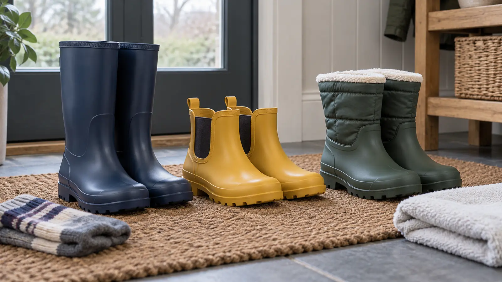

Tall pull-on
Fits: deeper puddles, wet grass and mud when shaft coverage matters. Tradeoff: bulk, heat, calf fit and slower independent changes.
GEAR · SCHOOL-AGE KIDS · WET DAYS · FIT FIRST
The boot has two jobs: keep the expected water out and fit well enough that the kid can walk. If it fails either one, the cute pattern is irrelevant.

“Rain boot” can mean a five-minute school drop-off, an hour at a muddy farm, a flooded campsite walk or cold shoulder-season chores. Those are different jobs. Write down four things before shopping: deepest expected water, longest continuous walk, likely temperature and where the boot will dry. Then choose the least bulky category that handles that reality.
APMA recommends rechecking school-age shoe size every four to six months because children grow and brands vary. The number on the box is a starting point, not evidence of fit.
A boot only works if it fits today and can be dry for the next use. After a wet day, remove any liner or insole only if the manufacturer allows it, wipe mud away, open the boot and air-dry it exactly as the maker directs. Do not improvise a heater, dryer, fireplace or direct-radiator method; heat can damage materials and adhesives. If a nonremovable insulated lining remains wet overnight, the category may be wrong for back-to-back school days.
Before the return window closes, do a dry indoor test, then follow the maker’s allowed leak-check method if one exists. “Waterproof” may describe the molded lower, a finished boot or only a material. Find the exact finished-product claim and where the protection stops.
Search the CPSC recall database with the exact brand and model, including used or handed-down boots. A clean search is not a safety certification; it is one gate.
School entrance and shallow puddles: start with low Chelsea-style. Muddy farm, wet field or deeper puddles: start tall. Cold wet sidelines or chores: compare insulated, but keep temperature and activity claims model-specific. Long family walk: skip rubber boots if a correctly fitted walking or hiking shoe solves the actual route. Sensory-sensitive child: test shaft pressure, sock seams, lining and boot sound indoors before removing tags.
Keep spare dry socks in a sealed pouch, a reusable bag for muddy boots and the regular shoes needed after the wet section. The family rain-gear guide handles shells and layers; the fall layer guide handles temperature. Boots do not replace either system.
Skip a rubber rain boot for a technical trail, long mileage, a child with current foot pain or gait concern, or any situation where a clinician has prescribed footwear. APMA advises consulting a podiatrist for concerns about gait, wear patterns or foot health. Skip a used boot with unknown recall status, cracked material, separated sole, damaged lining or persistent odor that cleaning cannot resolve.
MAKE THE DAY COUNT
Build the plan your family can finish well, then leave enough energy for the next part of the day.
More family plansTHE USEFUL STUFF
These are practical categories to compare—not a reason to overpack. Check fit, specifications and current reviews before buying.
Paid links: As an Amazon Associate I earn from qualifying purchases. You pay no additional cost.
Compare present fit, shaft clearance, heel hold, outsole, lining, drying instructions and the maker’s exact water-protection claim.
See current options → COMPARE ON AMAZONUseful for quick independent changes when the lower coverage matches the puddle depth; verify elastic-panel construction and current fit.
See current options → COMPARE ON AMAZONChoose insulation only when the forecast and activity require it; check lining material, removable components, drying method and the maker’s temperature guidance.
See current options →